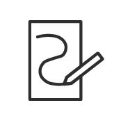
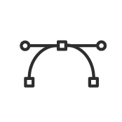

Voorwoord
De reden dat ik in eerste instantie voor dit project heb gekozen is omdat ik Isometrische ontwerpen altijd erg mooi vind om te zien, en het leek me heel gaaf om dit zelf ook te leren en mee te experimenteren. De relevantie die ik hieraan heb verbonden is dat andere mensen gebruik kunnen maken van mijn ontwerpen, door ze online aan te bieden kunnen anderen ze downloaden en bijvoorbeeld gebruiken en herinrichten.